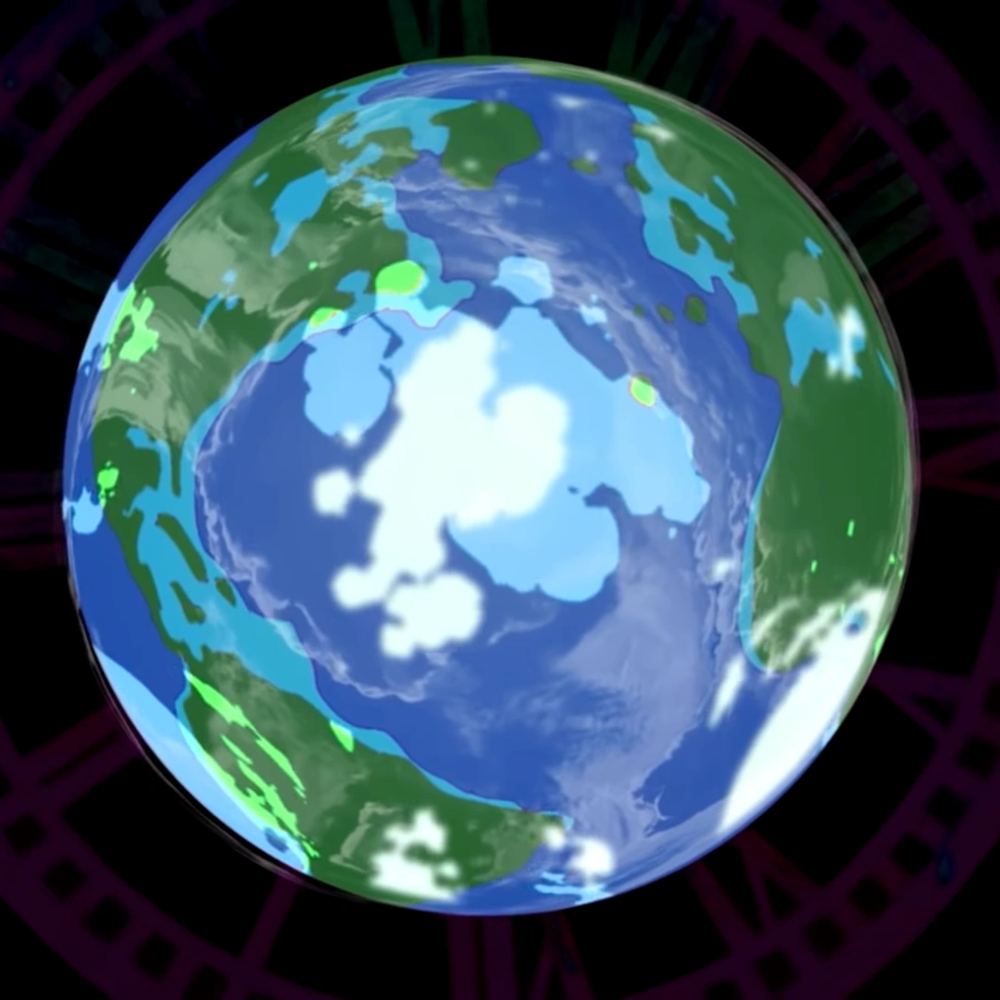
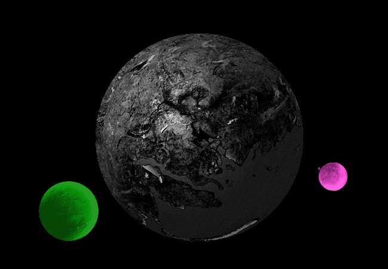

Pick a planet
Choose a planet to see the player characters of each species and some backstory on them.
| Humans | Trolls | Cherubs |
|---|---|---|
|  |  |
Some important information of note: Within the game the story takes place in, the players can perform a reset of the world called a scratch which will get it's own section but it's important to know here because this reset creates an alternate world where positions are swapped. The guardians become the children who play the game and vice versa the children become the guradians and the originals will be destroyed unless they find a way to escape, and the scratch has been performed twice in the story. So when you see the trolls being catagorized as being from Beforus and Alternia and the humans being catagoized as being Alpha and Beta that is why. I will specify which timeline came first on the page